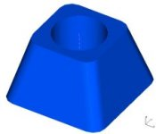
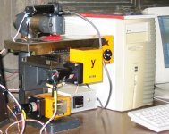
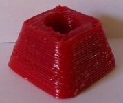
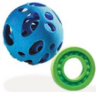
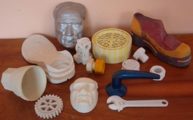
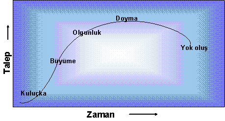
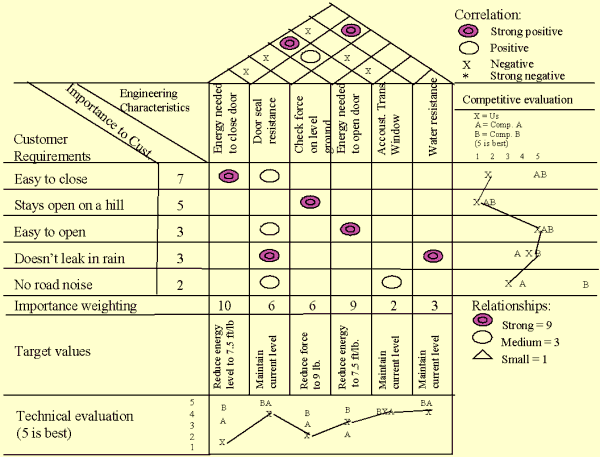
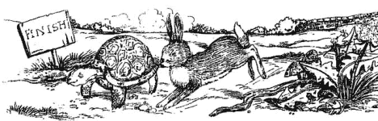

|
TARTIÞMA VE SONUÇ
Yeni teknolojiler bir taraftan önemli ölçüde insan kaynaðý
ve finansman gereksinimi, diðer taraftan bilimsel ve teknolojik
altyapý gerektirmektedir. Bu baðlamda, geliþmiþ ülkelerle
aralarýnda önemli bir teknolojik açýðýn bulunduðu geliþmekte
olan ülkelerde, baþarýlý bir teknoloji politikasýnýn anahtar
unsurlarýndan birisi, en azýndan baþlangýçta dýþarýdan elde
edilen teknolojiye etkin bir biçimde sahip olabilmek ve bunu
yerel koþullara uyarlayýp, daha sonra ilerletmektir. Bu da,
teknolojik yetenek birikiminin ilk aþamalarýnda yenilikçi
Ar-Ge faaliyetlerinden çok, ithal edilen teknolojinin uyarlanmasý
ve ilerletilmesine yönelik Ar-Ge faaliyetleri, TERSÝNE MÜHENDÝSLÝK,
taklit, teknolojik yazýný izleme gibi yasal ve yasal olmayan
çabalarý kapsayacaktýr.
Dolayýsýyla,
geliþmekte olan ülkelere yönelik teknoloji politikasý baþlangýçta
yeni teknolojiler geliþtirmeye yönelik faaliyetlerden ziyade,
en azýndan teknolojik açýdan lider ülkelerle olan açýk kapanana
kadar, teknolojinin uyarlanmasý ve etkin kullanýmý çabalarýna
odaklanmayý hedeflemeli, bu doðrultudaki bir teknolojik sistemin
oluþturulmasý ve etkin çalýþtýrýlmasý üzerine kurulmalýdýr.
Yeni sanayileþen bazý Doðu Asya ülkelerinde olduðu gibi özellikle
stratejik bazý sektörleri desteklemek üzerine kurulu bir teknoloji
politikasý yoluyla aradaki teknolojik açýk kapatýldýðýnda,
sýnai yapý zaten yeni teknolojilerin geliþtirilmesi ve yenilikçi
Ar-Ge faaliyetlerini zorlamaya baþlayacak ve uzun dönemli
teknoloji politikasý çerçevesinde bu tür faaliyetlerin yönlendirilmesine
yönelik stratejiler de hayata geçirilebilecektir.
HIZLI
PROTOTÝPLEME'nin (OTOÝNÞA)
POTANSÝYEL KULLANIM ALANLARI
- Mimari
uygulamalar
- Otomotiv
- Eðitim
- Her
nevi araç ve gereç üretimi
- Kuyumculuk
- Ayakkabýcýlýk
- Medikal
uygulamalar
- Moleküler
Modelleme
- Ambalaj
sektörü
- Kalýpçýlýk
Baþta
Amerika olma üzere geliþmiþ ülkeler, geliþmekte olan ülkelerin
ekonomilerini serbestleþme, yabancý yatýrýmlara ve ticarete
açma konusunda önemli baskýlar yaparken, fikri ve sýnai mülkiyet
haklarý konusunda sýkýlaþtýrma ve uyum saðlama yönünde küresel
uygulamalarý dayatmaktadýr. Bunda özellikle 1970 ve 1980'li
yýllarda bir grup Doðu Asya ülkesinin TERSÝNE MÜHENDÝSLÝK,
taklit ve uyarlama yoluyla teknolojik yeteneklerini yükseltmeleri
ve bu durumun merkez ülkelerin yüksek nitelikli sanayilere
dayalý karþýlaþtýrmalý üstünlüklerini onarmaya yönelik baskýlara
neden olmasýnýn büyük payý vardýr. Sanayileþmiþ merkez ülkeler,
yeni sanayileþen ülkeler kervanýna baþkalarýnýn katýlmasýný
istememekte ve patentlerin teknolojik imtiyaz ve tekel yaratma
iþlevinden sonuna kadar yararlanmayý arzu etmektedir.
|
 |
 |
 |
|
3D
CAD modeli |
Gaziantep
Üniv. Otoinþa Cihazý |
Ýnþa
edilen numune |
Yukarýda,
Gaziantep Üniversitesi'nde üretilen ve otoinþa tekniði (FDM)
kullanan bir makine ve bu sistemler üretilen plastik bir numune
görülmektedir.
Son
yýllarda, patent kanununun süreç (üretim usulleri) patentleri
kadar ürün patentlerini de kapsayacak biçimde düzenlenmesi
saðlanarak, geliþmekte olan ülkelerin tersine mühendislik
yoluyla rekabet gücünün artýrmasýnýn bir nebze önleneceði
düþünüldü. Çünkü, geliþmekte olan ülkelerden bazýlarý geçmiþte,
bazý sektörlerde ürün patenti korumasýný yasaklamýþtý. Bunun
temel nedeni, ürün patentlerinin çok daha kýsýtlayýcý olarak
yorumlanmasýydý. Gerçekten de, eðer belirli bir süreç patentli
bir ürünü üretmek için kullanýlýyorsa, benzer ürünü üretmek
için geliþtirilmiþ alternatif bir süreç, mevcut patenti ihlal
etmiyordu. Ancak ürünün kendisi patentliyse, ürünü üretmek
için kullanýlan yeni süreç mevcut patenti ihlal edecekti.
Amerika, belirli bir ürünün (özellikle ilaç sektöründe) tesine
mühendislik yoluyla taklidini önlemek ve benzer ürünlerin
alternatif üretimine olanak tanýyan süreç patentlerini sýnýrlandýrmak
amacýyla ürün patentlerini de bu düzenleme içine dahil ettirdi.
Bu düzenleme özellikle ilaç ve kimya sektörleri açýsýndan
Türkiye gibi geliþmekte olan ülkelerin sanayilerini zorlayabilecek
bir durum arz etmektedir. Bu nedenle, TRIPS (Ticaretle Baðlantýlý
Fikri Sýnai Haklar Anlaþmasý) anlaþmasýnýn gerçekleþtirilmesi
ve küresel ölçekte sýnai mülkiyet haklarýnýn sýkýlaþtýrýlmasýnýn
ardýnda Amerika gibi geliþmiþ ülkelerin baskýsýnýn olduðunu
belirtmek gerekir. Özellikle Doðu Asya ülkelerinin taklit,
uyarlama ve tersine mühendislik kanallarýný etkin kullanýp,
Ar-Ge faaliyetlerine göreli olarak daha az yatýrýmda bulunarak,
daha düþük olan üretim maliyetlerini biraz artýrmalarý ve
1970-1980'ler boyunca oldukça yüksek bir rekabet düzeyine
ulaþmalarý, sonuçta Amerika'nýn fikri ve sýnai mülkiyet haklarýna
yönelik kanunlarýn deðiþtirilmesine yönelik baskýsýnýn artmasýna
yol açmýþtýr. Türkiye de TRIPS anlaþmasýný imzalayan ülkeler
arasýndadýr.
ENÝSRET
KÝLSÝDNEHÜM. Nam-ý diðer veya düz okunursa: Tersine Mühendislik.
Öyle ters ve esnek ki, tanýmý bile insandan insana, þirketten
þirkete, WEB sayfasýndan WEB sayfasýna, makaleden makaleye
deðiþebiliyor. Ne tarafa çekersen oraya gidiyor. Ýþte bazýlarý:
- Tersine
Mühendislik - Reverse Engineering (Modelden NC Program Oluþturmak)
- Reverse
Engineering is a technology developed by Fleming Software
to convert old sheet metal NC programs into part geometry
in DXF format. These may then be imported into any CAD for
modification, or CAM system for re-programming.
- Reverse
Engineeering is a powerful tool of Concurrent Engineeing
(Tesine Mühendislik Eþ Zamanlý Mühendisliðin en güçlü araçlarýndan
biridir)
Þunu
da burada belirtmekte fayda var ki, biz dünyadaki mevcut PATENT
ve LÝSANS müessesesinin iyi iþleyen ve adaletli bir mekanizma
olduðuna inanmýyoruz. Öncelikle, patentleme süreçlerinin çok
uzun olmasý bir yana patentleme için istenen ücretlerin yüksekliði,
insanlarý canýndan bezdirmiþ durumdadýr. Üstelik, mevcut dünya
patentleme mekanizmasý sanýlanýn aksine çok basit ve ciddi
olmayan yöntemlerle yürütülmektedir. Çok önemli bir buluþ
için bile iki-üç sayfalýk, ayrýntý ve detay içermeyen evrak
istenmekte, görsellikten uzak ve kelime oyunlarýna dayalý
bir araþtýrma ve karþýlaþtýrma sistemi ile sonradan büyük
anlaþmazlýklara ve paraya dönüþebilecek patentler verile gelmektedir.
"Erken baþvuran alýr, ilk gelen oturur, ilk vuran avcýdýr."
anlayýþlarýyla bir yere varýlamayacaðý açýktýr. Daha dün,
Karaman'da yeni açýlan bir fabrikanýn ÜLKER'in o meþhur TAÇ
krakerinin isim hakkýna sahip çýktýðý ve kullandýðý, ÜLKER
firmasýnýn ise yirmi senedir bu ürünü yalnýzca kendisi üretmesine
raðmen mamulün ismini deðiþtirmek zorunda kaldýðý, henüz hafýzalardan
silinmemiþtir. Oysa, gerçek hak, hukuk ve adalet uygulansaydý,
böyle mi olmasý gerekirdi. Karaman'daki yeni kurulan bir bisküvi
fabrikasý ÜLKER'in gafletinden yararlanmýþ ve kanunlar ve
PATENT HAKLARI (!) buna müsaade etmiþtir. Ancak, o fabrikanýn
artýk þu günlerde ÜLKER'e satýldýðý ve/veya ÜLKER'e fason
üretim yaptýðý da konuþulmaktadýr. Buradan, þu sonucu rahatlýkla
çýkarabiliriz. Ar-Ge olmadan, yenilikçilik olmadan, cingözlük
yapmakla, taklitçilikle bir yere kadar. Sonrasý meçhul. O
yüzden TERSÝNE MÜHENDÝSLÝK ile Ar-Ge arasýndaki dengenin çok
iyi kurulmasý gerekir.
Dünya
patent mekanizmasýný bir SÖMÜRÜ ARACI olarak kullananlara
karþý kullanýlabilecek iki yöntem var. Bunlardan birincisi,
Ar-Ge. Bu þimdilik zor gözüküyor. Çünkü Ar-Ge'ye ayýracak
bütçemiz yok. O zaman tek yol kalýyor. TRIZ destekli TERSÝNE
MÜHENDÝSLÝK. TRIZ ile patentleri kýrmak, boyunduruklardan
ve prangalardan kurtulmak çok kolay. (Ayrýntýlý bilgi için,
bakýnýz: S. Kapucu, A. Baykasoðlu, T. Dereli, 2001)
TRIZ
- TRIZ;
Yenilikçi, Problem Çözme Teorisidir. Rusça'daki orijinal
isminin kýsaltýlmýþýdýr.
- Metodoloji,
1946 yýlýnda ilk kez G. Altshuller tarafýndan eski Sovyetler
Birliðinde geliþtirilmiþtir.
- Soðuk
savaþýn sona ermesiyle birlikte, ABD, Japonya ve Avrupa'da
tanýnmaya ve kullanýlmaya baþlanmýþtýr.
- Teknolojik
Ar-Ge'de yaratýcýlýðý destekler.
- Yenilikçi
teknolojilerin incelenmesinden çýkarýlan "Buluþ Prensiplerini"
temel almaktadýr.
- Probleminizi
çözerken, tüm dünya bilim ve teknolojisinin girdilerini
kullanabilme imkaný saðlar.
- Ticari
deðeri olan yenilikler yapmaya yönlendirir.
- Mekanik,
kimya, elektrik ve diðer alanlarda yenilikler için kullanýlabilmektedir.
Baþta
Japonya, Singapur, Güney Kore, Tayvan ve Çin olmak üzere birçok
Uzak Doðu ülkesinin TERSÝNE MÜHENDÝSLÝK uygulamalarý ile büyük
mesafeler kat ettiði düþünüldüðünde, bu uygulamanýn özellikle,
var olan silâh sistemleri ve bunlara ait destek teçhizatlarýnýn
parçalarýný imal eden savunma endüstrisi kuruluþlarý için
gerekli olduðu düþünülmektedir. Türk Silahlý Kuvvetleri envanterinde
bulunan ve deðeri milyarlarca dolarla ölçülebilen yüksek teknolojik
sistemlerin bakým, onarým ve modernizasyonu, bu konularda
bilgi birikimi ve TERSÝNE MÜHENDÝSLÝK kanalýyla teknoloji
yeteneðini geliþtirmek için önemli bir fýrsat oluþturmaktadýr.
Ülkemizde, makine imalatý sektöründeki þirketlerin ürettikleri
yeni ürünlerin tasarým bilgilerinin elde edilme yöntemlerinin
çok büyük oranda, TERSÝNE MÜHENDÝSLÝK ve müþteri tarafýndan
verilmesi þeklinde olduðu bilinmektedir. Bu þekilde hem yeni
ürün geliþtirme maliyeti hem de imalata geçiþe kadar olan
süre azaltýlmaktadýr. Sektör, büyük oranda bir mühendislik
sektörü olmasýna raðmen yeni ürün tasarýmýnda henüz fazla
bir mesafe kat edilmemiþ olduðu görülmektedir. Ürün bazýnda
üretim hacminin küçüklüðü, yeni ürün geliþtirme giderleri
üzerine de bir kýsýtlama getirmektedir. Daha geniþ pazarlara
eriþim ve daha büyük üretim hacimlerine ulaþma yeni ürün ve
teknoloji yatýrýmlarýnýn da önünü açabilecektir.
Üretilebilirliði
(prodüktivite) artýrmak, mühendislerin ve yöneticilerin en
büyük hedeflerinden bir tanesidir. Biz gitmesek de, duymasak
da, kullanmasak da; orada esnekliði ve tepkiselliði artýran
bir EÞ ZAMANLI MÜHENDÝSLÝK diye bir felsefe vardýr. Bu felsefe
ile kavramsal tasarýmdan gerçek üretime deðin geçen süre azaltýlýr.
Eþ zamanlý mühendisliðin en büyük silahlarýndan biri ise TERSÝNE
MÜHENDÝSLÝK'tir. Tesine mühendislik silahýnýn mermisi ise
HIZLI PROTOTÝPLEME cihazlarýdýr. Bu felsefeyi kullanmamak,
bu silahý taþýmamak ve bu silahýn mermilerini TEPKÝSEL ÜRETÝM
HEDEFÝNE göndermemek, hýzýn en önemli rekabet unsuru olduðu
þu dönemde ciddi rekabet sorunlarýna yol açabilir.
Yýlar
önce satýn alýnan bir türbinin kanatçýðý bir gün kýrýlabilir.
Ambarda hiç yedek kanatçýðýnýz olmayabilir, kalmamýþ olabilir.
Türbini veya makineyi satýn almýþ olduðunuz firma kapanmýþ
olabilir, iflas etmiþ olabilir. Bunlar olmayacak þeyler deðildir.
(Gaziantep Üniversitesi, Ýngiliz yardýmýyla 1994 yýlýnda KEMCO
isimli bir Koordinat Ölçme Makinesi (CMM, Coordinate Mesurement
Machine) aldý. Ama þimdi KEMCO isimli bir firma ortada yok.
Elinizde bir el-kitabý ile baþ baþa, yapayalnýz.) Bu durumda
ne yapýlacak? Üretimi durduracak mýsýnýz? Yapýlacak en kestirme
iþ, saðlam kanatçýklardan birini sökmek ve bir TERSÝNE MÜHENDÝSLÝK
iþlemine tabii tutmak olacaktýr. Taradýnýz, sayýsallaþtýrdýnýz,
modeli elde ettiniz ve bir prototipini inþa ettiniz. Geliþtirdiniz,
uyarladýnýz, projeksiyonlar uyguladýnýz. Tekrar. Sonra, elinizle
tuttunuz.. Ve her þey tamamsa, bu modeli üretecek NC kodu
ürettiniz, ya da modeli üretecek kalýp sistemlerini yeniden
tasarladýnýz, ürettiniz. CNC makineniz, bu kodlarý aldý ve
sizin için kanatçýðýnýzý üretti. Kalýplar size modeli verdi.
Pek de zor deðil, öyle deðil mi? Evet, bugün Avrupa'da böyle
yapýlýyor, Rolls-Royce böyle yapýyor. Avustralya'da nükleer
santrallerin türbin kanatçýklarý Sonlu Elemanlar Yöntemi ile
birlikte böyle geliþtiriliyor, yeniden yapýlýyor. Tesine Mühendislik,
üretimdeki ve tasarýmdaki hata ve eksikliklerin bulunmasýnda
ve düzeltilmesine mühendislere yardýmcý olmak için müthiþ
fýrsatlar sunuyor.
Hýzlý
prototipleme'yi veya tesine mühendisliði "KOPYACILIK"
olarak algýlamayalým, yalnýzca "kopyalama" amacý
ile kullanmayalým. Tesine mühendisliðin yeteneklerini doðru
ve yerinde kullanarak ürün tasarým zamanlarýný kýsaltalým,
daha çabuk tasarlayalým, daha çabuk üretelim, üretilebilirliði
artýralým ve de en önemlisi TEKNOLOJÝ GELÝÞTÝRMEK için bir
fýrsat kollayalým. Bakýnýz bir örnek verelim burada. Hani
meþhur bir anektod vardýr. Almanlar mikroskopta bile görünmeyen
bir tel üretmiþler ve Japonlara göndermiþler. Japonlar almýþlar
bakmýþlar. Önce aynýsýný yapmýþlar. Sonra da, telin tam ortasýna
bir delik delmiþler ve Almanlara geri postalamýþlar. Sonuçta,
Almanlar rezil olmuþ. Hem ellerindeki teknolojiyi kaptýrmýþlar,
hem de doksandan bir gol yiyerek geriye düþmüþler. Ýþte, Japonlarýn
o gün yaptýðý ve bugün de yaptýðý, uzak doðulularýn hepsinin
yaptýðý TERSÝNE MÜHENDÝSLÝK deðil de nedir? Yapýlacak iþ çok
basit. Parçayý ölç ve tara. Veriyi elde et. Veriyi iþle. Modeli
elde et. Modeli üret. Modelden gerçek üretime geç. Bu kadar
basit. TERSÝNE MÜHENDÝSLÝK, teknoloji transferinden teknoloji
geliþtirmeye geçiþte en önemli araç.
Biz
ise hep tersine gideriz. Ama bu sefer durum deðiþik. Murphy,
"Eðer her þey yolundaysa, mutlaka bir þeylerde terslik
vardýr" demiþ. Biz de, diyoruz ki; "Eðer mühendisliðin
tersine ise, iþler yoluna girer ve çabuk gider."
Hâlâ,
METAL (TENEKE) KOLA KUTUSU'nu üretemiyoruz. Hâlâ, PASTORÝZE
SÜT KUTUSU'nu üretemiyoruz. Ýstediðin kadar KOLA üret, istediðin
kadar SÜT üret. Fayda yok. Ambalajlama teknolojimiz yok. Onlarda
var... Nanconco'da, TETRA PAK'da. Ve onlar bizim için ambalajlýyorlar.
Biz kutularý üretemiyoruz. Üretecek bilgi var. Örneðin, metal
teneke kutunun ana iþlemi "derin çekme". Peki o
zaman eksik olan ne?...
Uzaklarda insanlar, 20 - 30 senedir TERSÝNE MÜHENDÝSLÝK felsefesini
ve teknolojisini sonuna kadar kullanýyorlar. Kullandýlar,
faydalandýlar. Þimdilerde, kullanýlan plastik tabanlý sarf
malzemeleri çevreye zarar veriyor diye, buzdan model üreten
(RAPID FREEZE PROTOTYPING) makineler icat ettiler, Nobel ödülleri
aldýlar. Bize ise, bunlar ancak bir "FANTAZÝ" olarak
geliyor. Biz hep tersine gideriz. Ama, bu sefer de DÜZ gitmeye
çalýþmayalým, TERSÝNE gidelim. Tersine giden ve TERSÝNE MÜHENDÝSLÝÐÝ
kullanarak belli açýnýmlar yapan Doðu Asya ülkeleri gibi,
merdivenleri onar onar çýkalým ve geliþmiþ ülkeler ile aramýzdaki
farký kapatmaya çalýþalým. Çalmadan çýrpmadan. Ar-Ge'yi ihmal
etmeden, TERSÝNE MÜHENDÝSLÝÐÝN nimetlerinden faydalanalým.
Matbaa bize 200 sene gecikmeli geldi. Bari, TERSÝNE MÜHENDÝSLÝÐÝ,
hiç olmazsa HIZLI PROTOTÝPLEME teknolojisini hemen getirelim.
POTANSÝYEL
ARAÞTIRMA KONU VE UYGULAMALARI
- Bilgisayar
görüþ sistemleri ile hýzlý tesine mühendislik
-
Eski makine parçalarýnýn yeniden tasarýmý ve geliþtirilmesi
için bir tesine mühendislik sistemi geliþtirilmesi
- Genetik
programlama ve veri madenciliði ile nokta bulutlarýnýn anlamlandýrýlmasý
- Hýzlý
Prototipleme ve Tesine Mühendislik sistemlerinin doðrudan
entegrasyonu
- Koordinat
ölçüm ve tarama için süreç planlama
- Medikal
görüntüleme sistemleri ile hýzlý prototipleme sistemlerinin
entegrasyonu
- Ortopedide,
protez ve plastik cerrahide hýzlý prototipleme uygulamalarý
- Serbest
ve karmaþýk yüzeyli nesnelerin modellenmesi ve iþlenmesi
- Sonlu
elemanlar ile tesine mühendislik
- Tesine
mühendislik için akýllý sezgiseller ile bir imaj iþleme
sistemi geliþtirilmesi
- Tesine
mühendislik için unsur algýlama
- Tesine
mühendislik ile geri dönüþüm ve sürdürülebilir üretim
- Unsur
tabanlý tesine mühendislik

Hýzlý prototipleme makineleri ile üretilen çeþitli modeller.
Tersine
Mühendislik Ama, NE ZAMAN?..

Grafik: Ürün Yaþam Eðrisi (Ürünün ortaya
çýkýþýndan piyasadan kalkýþýna kadar geçen sürede zamana baðlý
talep deðiþimi)
Günümüzde, disket fabrikasý kurmanýn ya da, CD fabrikasýna
teþvik vermenin ne anlamý olabilir ?
A...N'
da en iyi, HP makineleri var ama, cep telefonu pazarýnda esamisi
okunmuyor.?
TERSÝNE MÜHENDÝSLÝK tek baþýna bir anlam ifade eder mi.. ?
Müþteri'nin
sesi dinlenmezse, TERSÝNE MÜHENDÝSLÝK' tek baþýna bir anlam ifade
etmeyebilir.

Bir otomobil kapýsý için KALÝTE EVÝ örneði.
Hýzlý
büyüme için, yeni teknolojilere hýzlý buluþçu bir sýçrama
yapmak gereklidir. Ama istikrarlý bir büyüme ancak sürekli
iyileþtirme ve geliþtirme ile mümkün olabilir.
KAIZEN ile Deðiþim Mühendisliði,

Ar-Ge ile TERSÝNE MÜHENDÝSLÝK arasýndaki ince çizgileri belirlemek
çok önemli. Kimi zaman Tavþan, kimi zaman Kaplumbaða olmak
belki de en iyisi.
|